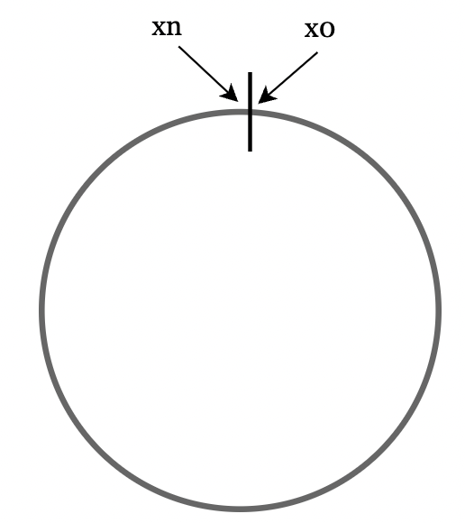
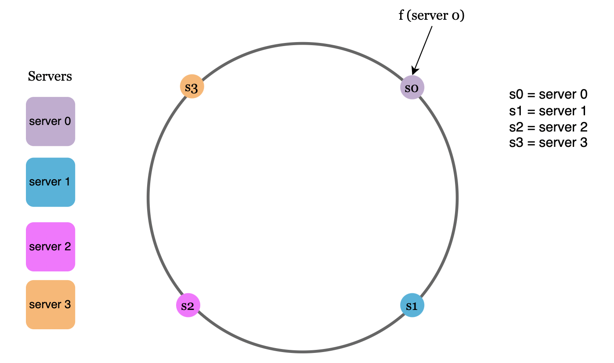
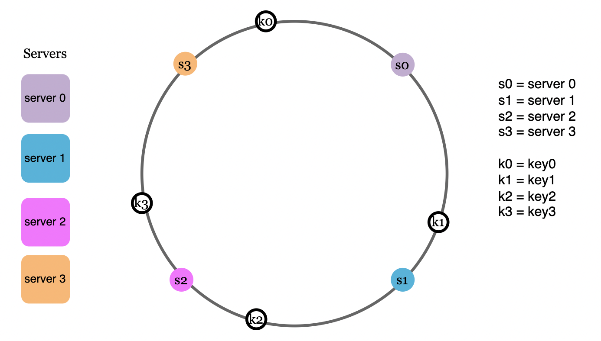
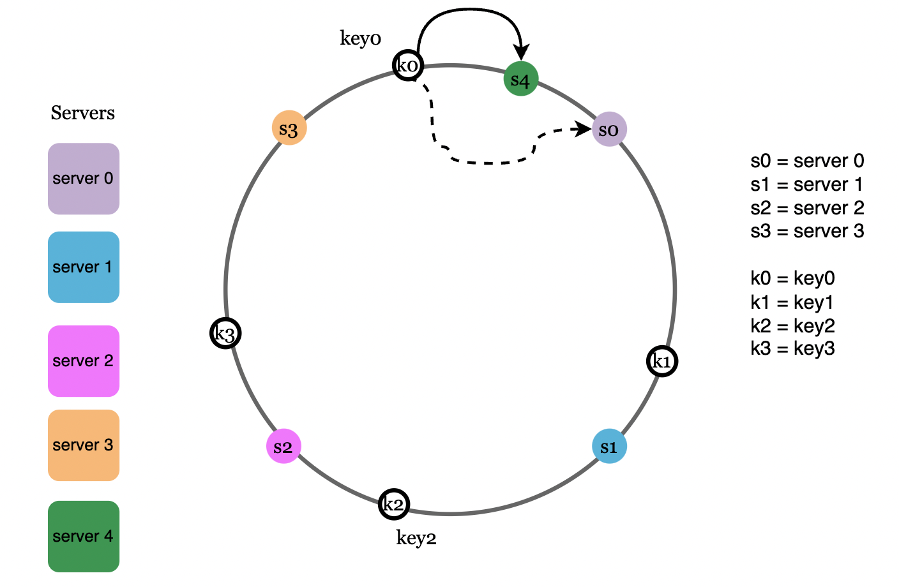
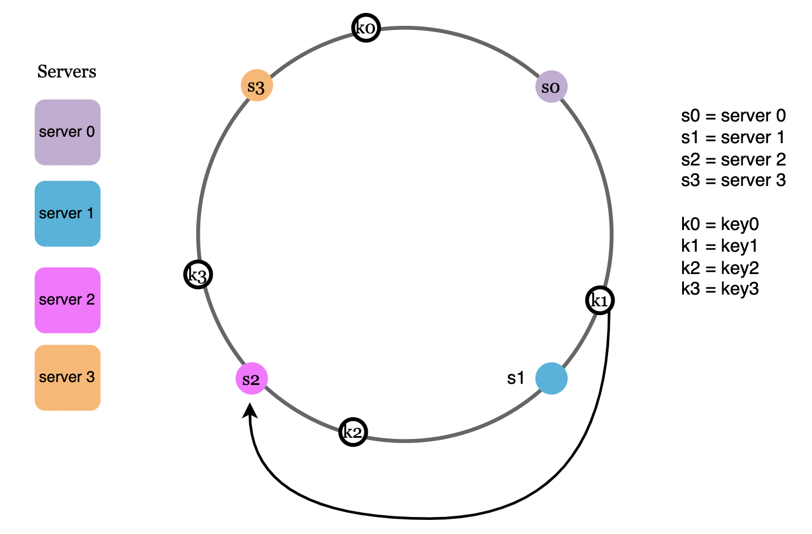
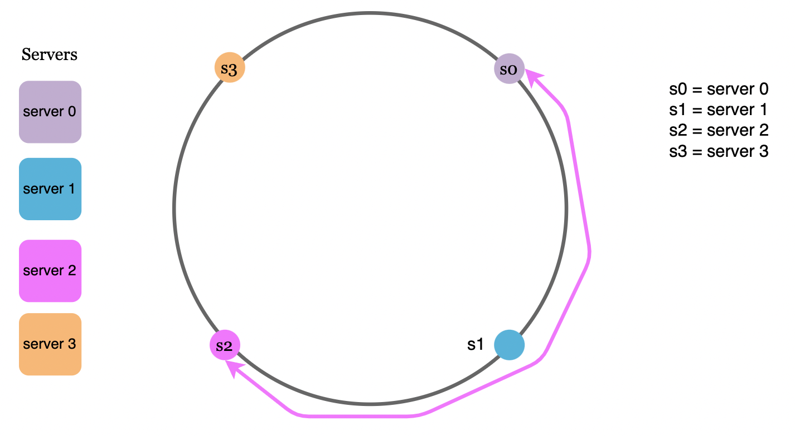
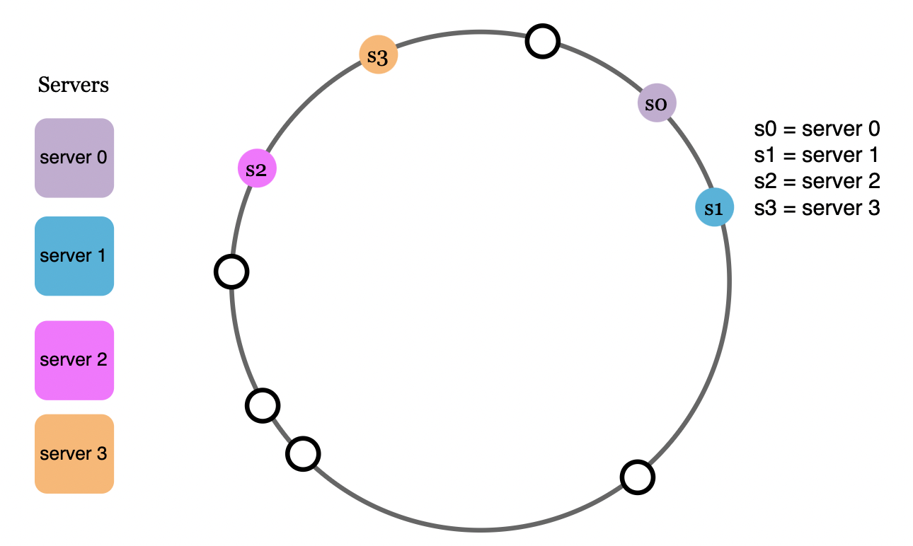
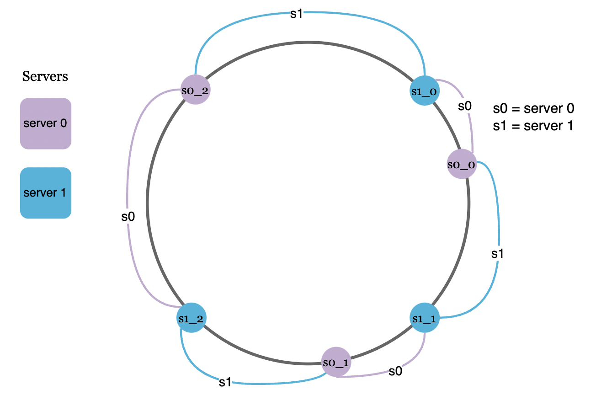
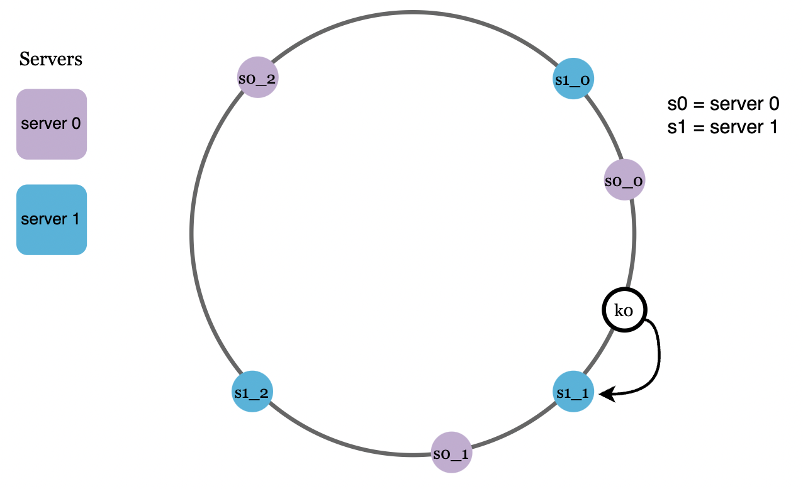

Design Consistent Hashing¶
For horizontal scaling, it is important to distribute requests across servers efficiently.
Consistent hashing is a common approach to achieve this.
The rehashing problem¶
One way to determine which server a request gets routed to is by applying a simple hash+module formula:
This makes it so requests are distributed uniformly across all servers. However, whenever new servers are added or removed, the result of the above equation is very different, meaning that a lot of requests will get rerouted across servers.
Note
This causes a lot of cache misses as clients will be connected to new instances which will have to fetch the user data from cache all over again.
Consistent hashing¶
Consistent hashing is a technique which allows only a K/N servers to be remapped whenever N changes, where K is the number of keys.
For example, K=100, N=10 -> 10 re-mappings, compared to close to 100 in the normal scenario.
Hash space and hash ring¶
A hash ring is a visualization of the possible key space of a given hash algorithm, which is combined into a ring-like structure: 
Note
Murmurhash3 is popular because of its speed on x86 platforms and good distribution for low collision
Hash servers¶
Using the same hash function for the requests, we map the servers based on server IP or name onto the hash ring: 
Hash keys¶
The hashes of the requests also get resolved somewhere along the hash ring.
Warning
We're not using the modulo operator since hash ring contains all possible value of output of hash function in ring.

Server lookup¶
Now, to determine which server is going to serve each request, we go clockwise from the request's hash until we reach the first server hash:

Add a server¶
Via this approach, adding a new server causes only one of the requests to get remapped to a new server: 
Remove a server¶
Likewise, removing a server causes only a single request to get remapped: 
Two issues in the basic approach¶
The first problem with this approach is that hash partitions can be uneven across servers: 
The second problem derives from the first - it is possible that requests are unevenly distributed across servers: 
Virtual nodes¶
To solve this issue, we can map a servers on the hash ring multiple times, creating virtual nodes and assigning multiple partitions to the same server: 
Now, a request is mapped to the closest virtual node on the hash ring: 
The more virtual nodes we have, the more evenly distributed the requests will be. This will enable to add server with heterogenous resources to be part of ring.
Note
An experiment showed that between 100-200 virtual nodes leads to a standard deviation between 5-10% for key distrubution among virtual node.
Wrap up¶
Benefits of consistent hashing: * Very low number of keys are distributed in a re-balancing event * Easy to scale horizontally as data is uniformly distributed * Hotspot issue is mitigated by uniformly distributing data, related to eg a celebrity, which is often accessed
Examples of real-world applications of consistent hashing: * Amazon's DynamoDB partitioning component * Data partitioning in Cassandra * Discord chat application * Akamai CDN * Maglev network load balancer